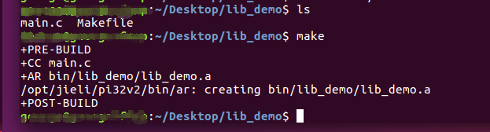

4.2. LINUX下安装杰理工具链和编译静态库
4.2.1. Linux环境
系统要求如下
说明 |
– |
|---|---|
CPU |
X86_64 |
Linux版本 |
Ubuntu 16.04(建议) |
Make版本 |
GNU Make 4.1(建议) |
4.2.2. 工具链
Linux工具链下载
Linux工具链安装
解压jieli-linux-toolchains-*.tar.xz
将解压后的所有目录和文件复制到/opt/jieli目录下, 如下图：

4.2.3. 静态库编译
静态库DEMO下载
make编译静态库DEMO
在linux系统中启动终端(terminal), 进入demo源码目录，执行make即可，如下图：

cmake编译静态库DEMO
在linux系统中启动终端(terminal), 进入demo源码目录，执行以下步骤即可，如下图：